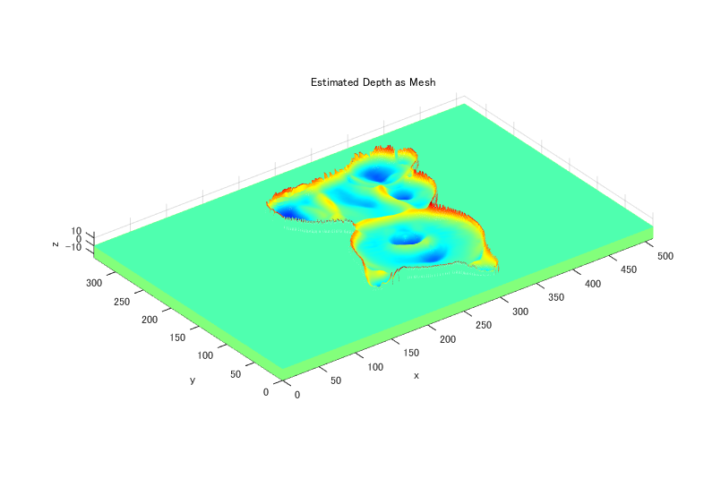

Contents
Computer Vision 2015 Assignment 1
P8128.pdf This code was originally called solntemplate.m. I have removed the directory handling (the data iss assumed to be on the path somewhere, e.g. in the testing Fixtures folder).
% Publish this document to see the results. % L must be computed, after that the datasets can be run in any order
Spatial coordinates:
We'll assume a right handed coordinate frame with X to the right, Y down, Z in the direction we are looking. We assume orthographic imaging, with the camera coords aligned with world coordinates.
close all
L = CV01_EstimateLightDirections()
L =
1 列から 7 列
0.5109 0.2547 -0.0383 -0.0708 -0.3006 -0.1010 0.2774
-0.4592 -0.1259 -0.1699 -0.4280 -0.4989 -0.5678 -0.4182
-0.7267 -0.9588 -0.9847 -0.9010 -0.8129 -0.8170 -0.8649
8 列から 12 列
0.1184 0.2313 0.0918 0.1407 -0.1321
-0.4243 -0.3220 -0.3360 -0.0360 -0.3531
-0.8978 -0.9181 -0.9374 -0.9894 -0.9262
%%%%%%%%%%%%%%%%%%%%%%%%%%%%%%%%%%%%%%%%%%%%%%%%%%%%
Loop over the test image sets to be used
close all CV01_runOnDataset(L, 'ps.gray');
CV01 estimateNormalsAndAlbedo ... CV01 estimateColorAlbedo ... depthFromNormals equation setup... solving... lsqr は、許容誤差 1e-06 に収束することなく 反復 20 で停止しました。 最大反復回数に達しました。 (番号 20) で返される反復は、相対残差 0.85 をもちます。

close all CV01_runOnDataset(L, 'ps.buddha');
CV01 estimateNormalsAndAlbedo ... CV01 estimateColorAlbedo ... depthFromNormals equation setup... solving... lsqr は、許容誤差 1e-06 に収束することなく 反復 20 で停止しました。 最大反復回数に達しました。 (番号 20) で返される反復は、相対残差 0.59 をもちます。
close all CV01_runOnDataset(L, 'ps.cat');
CV01 estimateNormalsAndAlbedo ... CV01 estimateColorAlbedo ... depthFromNormals equation setup... solving... lsqr は、許容誤差 1e-06 に収束することなく 反復 20 で停止しました。 最大反復回数に達しました。 (番号 20) で返される反復は、相対残差 0.81 をもちます。
close all CV01_runOnDataset(L, 'ps.owl');
CV01 estimateNormalsAndAlbedo ... CV01 estimateColorAlbedo ... depthFromNormals equation setup... solving... lsqr は、許容誤差 1e-06 に収束することなく 反復 20 で停止しました。 最大反復回数に達しました。 (番号 20) で返される反復は、相対残差 0.78 をもちます。
close all CV01_runOnDataset(L, 'ps.horse');
CV01 estimateNormalsAndAlbedo ... CV01 estimateColorAlbedo ... depthFromNormals equation setup... solving... lsqr は、許容誤差 1e-06 に収束することなく 反復 20 で停止しました。 最大反復回数に達しました。 (番号 20) で返される反復は、相対残差 0.75 をもちます。
close all CV01_runOnDataset(L, 'ps.rock');
CV01 estimateNormalsAndAlbedo ... CV01 estimateColorAlbedo ... depthFromNormals equation setup... solving... lsqr は、許容誤差 1e-06 に収束することなく 反復 20 で停止しました。 最大反復回数に達しました。 (番号 20) で返される反復は、相対残差 0.9 をもちます。